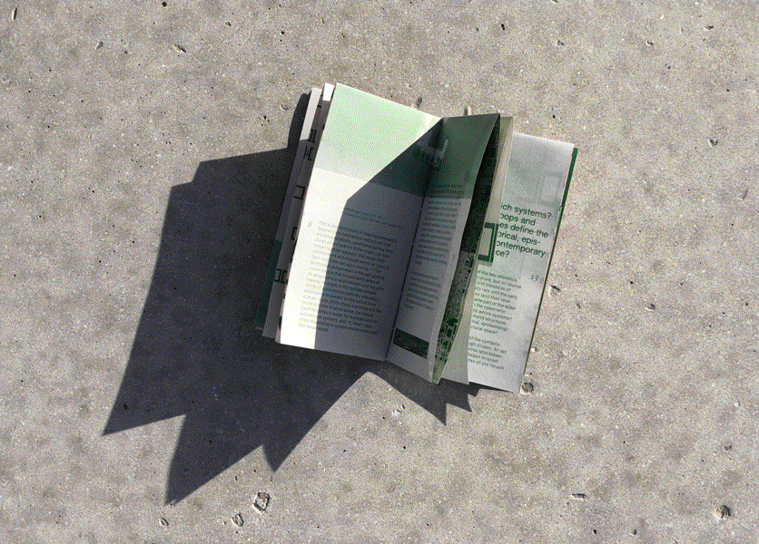
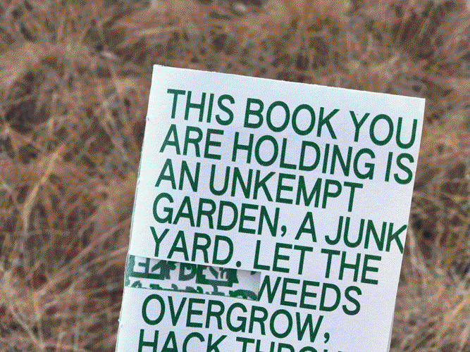

Are.na Annual4.5 × 7.7"   A collection of essays, interviews, and artwork from the Are.na community. Designed with Meg Miller and Daniel Pianetti. Annual 2025, 2024, 2023, 2022 |
Remakedimensions???    An annual journal celebrating first-year work from Washington University in St. Louis. |
Fresh Not Frozen A small mobile site that delivers bite-size factoids about the American TV dinner, perfectly portioned for distracted reading. |
Some Texts on the iPhone3 × 6" pages, 8.5 × 11" board    An art book containing various writings about and imagery of the iPhone to explore the device’s role in contemporary American society as status symbol, erotic object, spectacle of lightness, and luxury destroyed. |
Ouija Board Seance   A crowdsourced poster that plays with the gesture of obscuring and revealing information. A collaboration with Betsy Ellison. |
Basic Space  Assets for a speculative festival, Basic Space, that explores the potential of abstracting meme formats. |
Nostalgia Loop13.8 × 19.7"   A broadsheet housing two articles about the role of nostalgia in global and American politics. Influenced by the comfort of vintage food graphics, this newspaper considers how complacency can be dangerous. |
Meme Engine Sampler2.75 × 5.5"   Abstracting meme formats via a custom-made Drawbot program. A collaboration with Nathan Springman. |
This book you are holding is a junkyard



3.5 × 6.5" IMAGES ARE STRETCHED RN. An adaptation of an essay about computer glitches and malware. |
memory garden A digital zen garden: collecting worldwide memories submitted anonymously on the little memory app; exploring ASCII art and the metaphor of memories as blossoming flowers. |
A Window For Two A program exploring the poetics of screenshots; watch digital sunsets with your computer. |
ACM WUSTL Merch   A program exploring the poetics of screenshots; watch digital sunsets with your computer. |